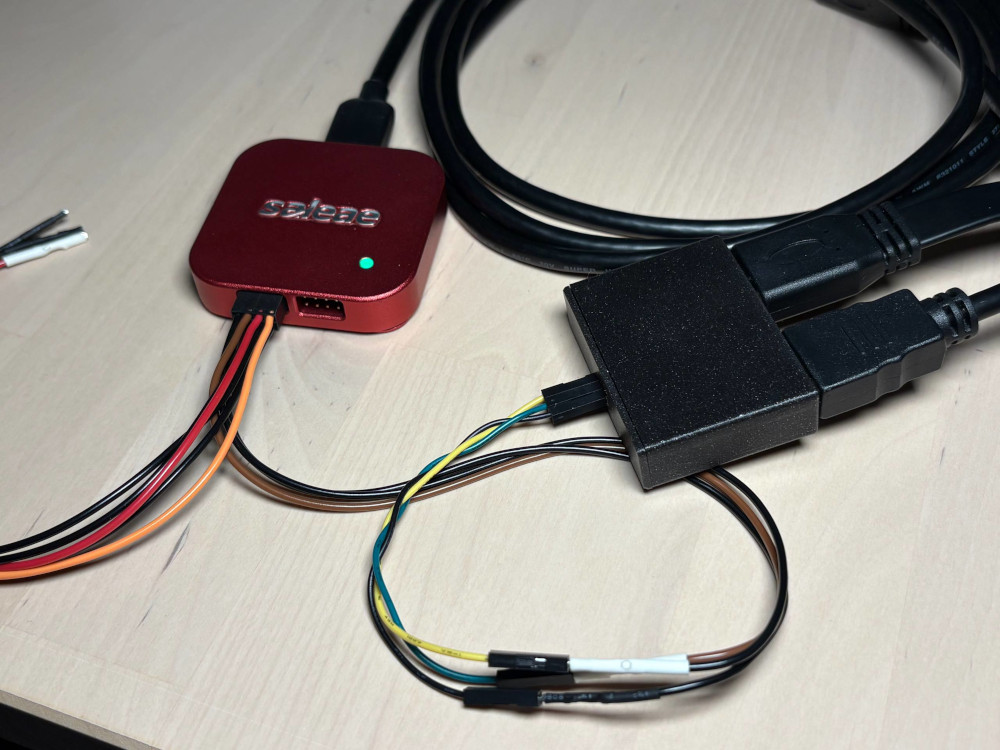
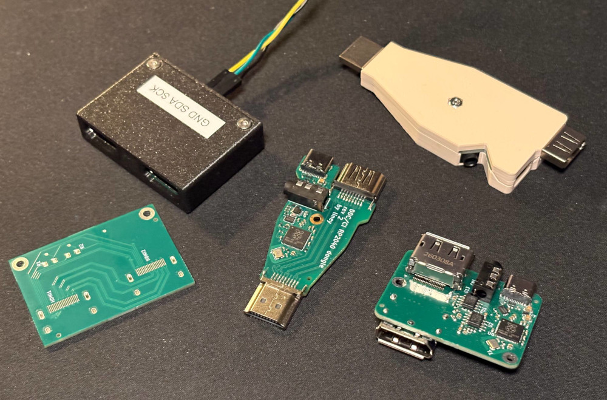

There were two triggers for this, both coming from my husband.
So I made a device that makes this possible with a physical knob.
However, this article is more about how I got there: making a PCB to probe the signal and possibly inject something into it.
DDC stands for “Display Data Channel”. DDC is a set of protocols that is used for communication between a computer and a monitor.
The same protocols are used in VGA, DVI, DisplayPort, and HDMI. All these protocols are based on I2C: the computer is the controller, the monitor is the target. In the case of VGA, DVI, and HDMI, two pins on these connectors are just dedicated to 5 volts SDA and SCL. In the case of DisplayPort, things are a bit different: these I2C-based protocols are crammed into the AUX diffpair. The apparent complexity of the AUX channel is why I decided to start off with HDMI.
Over this communication link, things happen, such as:
About the different standards, to put it short:
All of these are at the time of writing available for free download from the VESA standards website.
As I started reading about the above, and other people’s DDC/CI adventures, I realized I wanted to probe the I2C line myself to get a feel for it.
And I did not want to risk disrupting the actual video signal by tearing apart a cable; I wanted a PCB for that.
Hence came the DVI I2C checkpoint, my first PCB with controlled impedance traces. The S-shaped layout idea, that avoids vias, I got somewhere from Reddit.
I am a software engineer. I was never educated to make PCBs. In this section I, with the vanity of a software engineer, will give my take on how to make PCBs, because I did it twice and it seemed to work.
If you are in the same bucket as me, then really, just watch some of Eric Bogatin’s and Rick Hartley’s talks on PCB design. After that, preferably after that, read some of TI’s app notes on high speed layout.
I use KiCad, and I ordered the board from JLCPCB because of the low cost.
As I came to understand, knowing the capabilities of who will manufacture your board needs to come first. I installed a DRU from someone on Github; I am not linking the specific one, because it seems to be outdated, and there are several forks of the project available, and generally, just make sure your KiCad’s “Board Setup” -> “Custom Rules” is filled with some rules matching your board house capabilities (at the time of writing, the JLCPCB capabilities were available here).
You should also set up the board stackup; again, on Github there are some autogenerated JLCPCB board stackups, or you can fill it out yourself. As I understand, this is mostly useful if you want to use KiCad’s impedance calculator instead of the one on JLCPCB’s website, but I also hope this affects the calculation of equal trace lengths when they need to go through unequal amounts of vias (looking at you, pin 14 / pin 19 makeshift “differential pair” of HDMI…)
Anyway. You open Wikipedia about HDMI, and you see there are some signals that are differential pairs (four, or five, it depends), and that they have a “100 ohm impedance”. You need to pass these signals from one connector to the other. In practice it will mean only that:
The specific frequency of the signal that goes over the trace does not matter for layout; what matters is the characteristic impedance you are told the traces should have. And the characteristic impedance of the traces depends only on the above.
I learned I should use the JLCPCB impedance calculator that will apply the above rules. So I:
There is an important assumption this calculator makes (at the time of writing). To quote JLCPCB’s guide:
Results for 4- to 8-layer boards are calculated assuming Nan Ya Plastics NP-155F core material, and SYTECH S1000-2M for 10-layer boards and higher.
Basically, when ordering the PCB, the right FR-4 material needs to be chosen in the configurator.
The numbers from the calculator I had to put into KiCad’s “Net Classes” table, specifically — the spacing into “DP Gap” and the width into “DP Width”.
For the rest of the layout, well, the signal is “high speed”. I settled on the following set of high speed layout rules for myself (maybe too strict? maybe too relaxed? I don’t know):
And for differential pairs:
Since this is a video signal, the three video lanes and the clock lane should also be all the same length.
There are tolerances for all of the above, but don’t expect the rest of the system to be perfect; for example, this box is supposed to sit between two HDMI cables, which are already notoriously unreliable. So try to design the PCB as well as you can anyway. It will be fine.
I made some mistakes with this board, that turned out not to be impactful at all:

I have some dumps that can be loaded into Pulseview and analyzed with the EDID analyzer, or you can use sigrok-cli:
sigrok-cli -I csv:header=yes:column_formats=t,l,l -i ddcci_capture_brightness_set.csv -P i2c,edid -A i2c=address-read:address-write:data-read:data-write:start:stop:nack,edid
The DDC/CI brightness writing action:
i2c-1: Address write: 37
i2c-1: Data write: 51
i2c-1: Data write: 84
i2c-1: Data write: 03
i2c-1: Data write: 10
i2c-1: Data write: 00
i2c-1: Data write: 2A
i2c-1: Data write: 82
0x37 is the monitor address. 0x51 is the source address. 0x84 is the length of the message. 0x03 is “Set VCP Feature”. This is all from the DDC/CI standard.
0x10 is the Luminance (brightness) ID. This is from MCCS.
0x00 and 0x2A are low and high bytes of the VCP setting value (this is from DDC/CI).
This is, in decimal, 42, because I set brightness to 42. But is it 42%? Or 42/256? Or 42/65536? MCCS says: “Increasing (decreasing) this value will increase (decrease) the Luminance of the image”. In practice, it is usually percentages, but some monitors have different ideas. The dump also has the computer sending a Get VCP Feature and getting a reply for 0x10. The monitor does answer that the range for 0x10 is from 0x00 to 0x64 (decimal 100). So for this monitor, it is a number from 0 to 100.
0x82 is the checksum (XOR of some of the bytes). This is from DDC/CI.
I2C is, in theory, multi-controller capable. There is even a super simple arbitration algorithm that is stemming naturally from the protocol (who sends all the first zeroes, wins).
However, all controllers present on the bus need to respect the condition of losing the arbitration. They also need to respect when the bus is already occupied by some other communication.
It can not be guaranteed that all computers that can be used with this box are supporting the above. Having more than one controller on DDC is not normal, and there is no reason to account for this possibility.
Having several controllers on the DDC bus is, to my knowledge, not a supported case in any of the applicable VESA standards.
Also, the Arduino Wire library is too, as per the Internet, not well performing in multi-controller setups.
But none of that matters. It just… works: here comes the DDC/CI injector.
This device is not that smart. It sits on the same I2C bus as a second, bonus, controller. If it was smarter, it would pass I2C through itself, with buffering, and such. But no, it just spams to the same bus.
Since this is a device that is present on the I2C bus, it needs some pull-ups (as VESA DDC/CI v1.1 says, at least 2.2kOhm). In that device, they are part of the level shifter I had to use to translate from 5V of DDC/CI to 3.3V of the RP2040 board.
The code is using the two cores of RP2040.
One core is handling the UI (the rotary encoder with a button, the display, the LED). It is a simple state machine with four pages: searching for a monitor by repeatedly trying to read out EDID; we found a monitor and are now repeatedly trying to read out the current VCP values over DDC/CI; top menu; editing menu.
The second core is handling the DDC communication. Other than the initial connection and sending updated values, it is pinging the monitor periodically (same as a computer does).
There is a FIFO from core 2 to core 1, where information about state or value change is being shared. There are also bits of shared memory with mutexes, containing 1) the name of the monitor, 2) the declared list of inputs of the monitor, 3) the cores’ joint idea on the current VCP values.
The device loses the connection to the monitor from time to time. I attribute it to clashes on the I2C bus. But the device recovers pretty quickly, and this also does not impact the monitor’s functionality, so it turned out to be OK.
Miniaturization is a trend that’s hard to escape, for example, when your husband asks for a smaller device for his already cluttered desk. So I later replaced the DDC/CI injector box with the DDC/CI dongle. It does the same thing. But theoretical signal integrity is, hopefully, better.
Since the dongle is, technically, either a DVI device that uses HDMI housings, or a non-compliant-and-will-never-be-compliant HDMI device, I am working on DisplayPort variations of the device. As mentioned before, DisplayPort makes it more complicated because the same data is now shoved into a high-speed LVDS differential pair. But on the other hand, this could carry over to a USB-C variation of the same.
Work in progress hardware devices are on my Github, for example: displayport_aux_checkpoint.

Except where otherwise noted, this content is licensed under CC-BY 4.0; except for any code and code snippets, which are, except where otherwise noted, licensed under 0BSD.